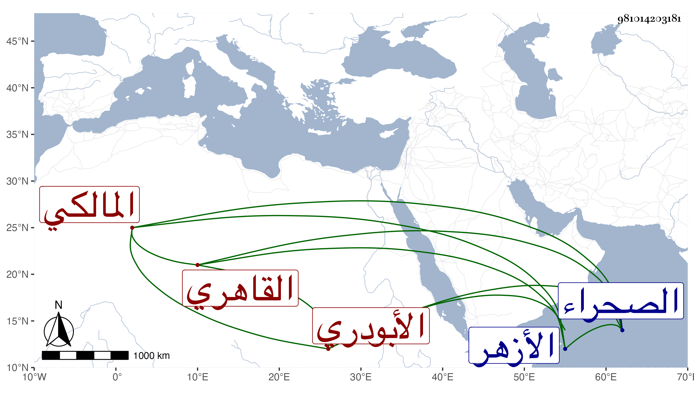

0902Sakhawi.DawLamic.ITO20230111-ara1.EIS1600.981014203181
Biography ID: 981014203181
846
محمد بن إبراهيم بن أحمد بن إبراهيم بن عبد الرحمن الشمس بن البرهان الأبودري الأصل القاهري المالكي نزيل الصحراء ، ويعرف كأبيه الماضي بالأبودري . ولد في رمضان سنة خمس وأربعين وثمانمائة بسويقة المنصوري بالقرب من الأزهر ونشأ فحفظ القرآن والعمدة وابن الحاجب الفرعي والأصلي وألفية ابن مالك وغيرها وعرض في سنة ست وخمسين فما بعدها على جماعة من أعيان مذهبه كناصر الدين بن المخلطة والتريكي وأبي الفضل المغربي والقرافي ومن غيرهم كالعلم البلقيني والمحلي والمناوي وابن الديري والأمين الأقصرائي والعز الحنبلي وسمع من جماعة كالصلاح الحكري والشهاب الحجاري سمع منهما المسلسل ولازم السنهوري في الفقه وأصوله والعربية وغيرها واختص منه بما لم يزاحمه فيه غيره وكذا أخذ عن النور الوراق في الفقه والصرف وحضر دروس الولوي السنباطي واللقاني ثم بعد شيخه أخذ في البيضاوي عن الكمال بن أبي شريف وفي فنون الحديث عني واغتبط بذلك ، وتميز وشارك في الفضائل وربما أقرأ في العربية وتمرن به فيها كل من ولدي أبي البقاء وصلاح الدين ابني الجيعان وحج وأم بتربة الست مع التواضع وسرعة الحركة والهمة في مآربه وهو أحد نواب المالكية .
